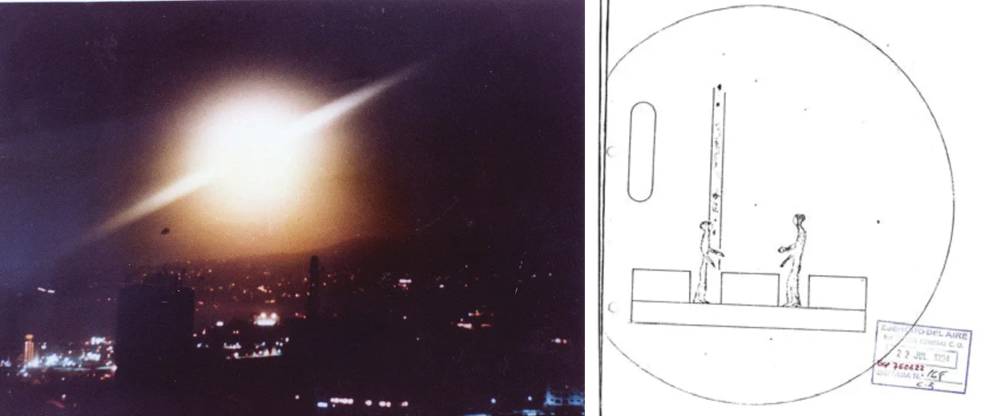
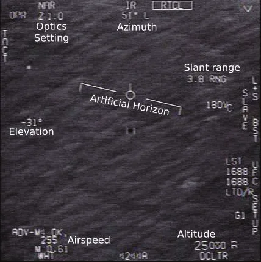
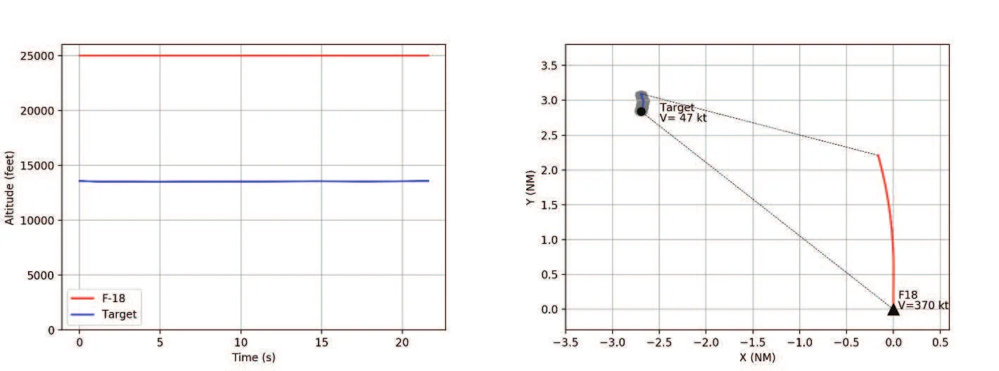
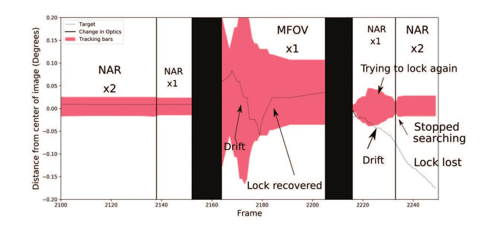
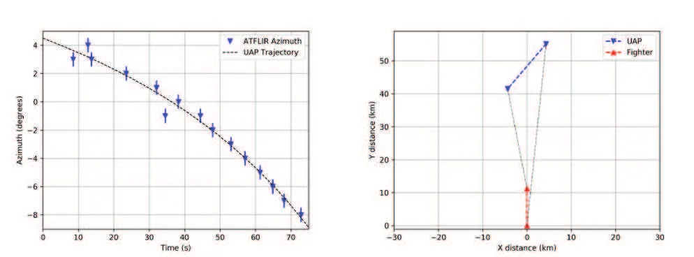

Witness testimonies are at the core of every UFO report. The descriptions contained in them, however, are not directly related to the UFO features. Instead, they describe what the witness perceived, interpreted, and is able to recall at the time of reporting. It is a subjective account of what he experienced. Therefore, accounts must be checked against objective data to discriminate what parts can be taken as is, and what parts must be reviewed and reinterpreted.
The huge majority of UFO cases are based on witnesses’ accounts. Witnesses usually recall impressive speeds or accelerations, impossible maneuvers, varying sizes, colors, light intensities, either at close or far away distances…
But what they are describing are not necessarily the actual features of a UFO. Several stages can be defined to describe the process of generation of any UFO report, basically: Apparition of a stimulus, transmission, perception, and communication. From the moment a visual stimulus appears somewhere either in the sky or near the ground, its light first has to travel towards the witness’s position while being affected by atmospheric transmission, clouds, obstacles... Then it has to be perceived by the witness’s senses, and interpreted by the brain. Sometime later, which can range from hours to days, months or even years, the witness recalls his observation and reports it to somebody.
Even if the original stimulus was of mundane origin, the final account reflected in a UFO report has passed through different factors. Factors external to the observer can be objectively identified and considered (e.g., atmospheric transmission). But factors internal to the observer are of a subjective nature: limits of the senses, optical illusions, brain interpretation, emotions during sighting (surprise, shock, fear…). Even during the communication process, the witness can stress details he or she (subjectively) considers important, while leaving out details he may be aware of, but does not consider relevant.
It is not the purpose of this introduction to make an extensive description or classification of all kind phenomena that can affect the final report of a UFO sighting, but to clearly point out that any report that an investigator has to deal with, is an account of what a witness did perceive, interpret, and was finally able to communicate. How far or close to reality the description is, is highly variable and dependent on each witness.
Let us consider the sightings in the Canary Islands on . On that date, a series of submarine-launched Poseidon missiles in the Atlantic Ballester Olmos, V.J. & Campo Pérez, R.: ¡Identificados! Los ovnis de Canarias fueron misiles Poseidón, Revista de Aeronáutica y Astronáutica, n° 701, , pp. 200-207 left an expanding smoke trail illuminated by the setting sun. The phenomenon had multiple witnesses in the whole archipelago, and triggered a UFO investigation by the Spanish Air Force. Mando Operativo Aéreo - Estado Mayor del Aire: Avistamiento de fenómenos extraños en Canarias: 22 de junio de 1976, Biblioteca Virtual de Defensa Most of the witnesses described some kind of light increasing in size and then vanishing. Some considered it was close to them, over the ground, or approaching. But the most surprising description involved two beings standing inside a translucent sphere. Figure 1 reproduces a picture taken of the event, and the drawing made by the witness.

We can see the different perceptions many witnesses had for the same stimulus. Many gave rather reasonable descriptions (reasonable respect to what really happened), but a few gave shocking ones. Maybe in ‘multiple witnesses cases’ there is way to decide what sounds reasonable and what does not – start with what the majority says, and check how accurate it is.
It is not that easy when dealing with a ‘few witnesses cases’ – or even ‘single witness cases’: is his/her description a reasonable one or radically different from reality? There are very few other accounts to compare – or none at all.
In our previous example, we can notice that some witnesses apparently gave information that may be quantified. Distance, position, speed, size, time of the day, duration… are examples of basic quantitative data that may allow obtaining the dynamic behavior of whatever was seen. Analysis of these data should help in validating the account: Is the perceived apparent size compatible with the perceived distance and height above the ground? Does the perceived trajectory match any known object? Was there any stimulus present that may match these perceptions at the time of the sighting? After such analysis and validation, we can have a better idea on how reasonable the account was.
Unfortunately, these data are sometimes missing, poorly estimated or only qualitatively expressed, if they are given at all. It is not unusual to read things like “a fast moving object,” which indeed is of no help: How fast is “fast”? Even the date and time are sometimes dubious!
Let us look at a different example. On , there was a well-observed and documented launch of a Rubis rocket from Hammaguir. Its payload included barium and copper oxide charges to study the upper atmosphere, and produced several sightings all across Europe, from southern Spain to Austria. Ballester Olmos, V.J. & Plaza del Olmo, J.: La experiencia espacial del 22 de abril de 1966, Academia.edu Out of 31 accounts, only 15 reported the position of the phenomenon. But only those reporting an actual measurement or a relative position to a known star, were accurate enough. Estimates of an absolute value of elevation varied significantly. Azimuth estimates were only roughly correct, but mostly informed as a broad cardinal point direction (“South,” “Southwest”).
Humans as measuring devices are simply terrible. Of course, experience serves as some sort of calibration in specific circumstances, and educated guesses can be fairly correct, albeit not always. Distances, speeds, sizes, positions, etc., are variables that depend on what the observer expects to see, and what his or her brain is trying to identify. An airline pilot may expect to see other planes in the air, so parameters like size, speed, or altitude of any light will be interpreted on this basis. When such a light does not behave like a plane should, surprise arises and results in Venus being misidentified, Manuel Borraz: Venus, tráfico no identificado, Academia.edu or distant lights on the ground forcing the landing of an airliner. Fernández Peris, J.A.: El expediente Manises, vol. 1, Biblioteca Camille Flammarion, Fundación Anomalía (Santander),
But cases are eventually solved, and the original stimulus can be identified despite the lack of reliable data within the accounts. Accounts cannot be taken at face value, but that does not mean they have to be dismissed right away. They must be checked by obtaining data from an independent source. Thanks to the development in technology, we have now easy access to tools that can show us land maps, sky maps, airline radar tracks, databases of rocket launches, satellite tracking software… very valuable tools to obtain independent data to check against an account. Only after such checks, can we know what parts of a testimony can be taken as-is, and which others should be reinterpreted.
Humans cannot perform accurately as a measuring device. Scientists know this very well, as any laboratory is fully equipped with expensive devices to measure tiny electric currents, images of extremely small particles, spectrometers to register wavelengths invisible to human eyes… Any observation or experiment needs dedicated equipment.
There is no dedicated equipment for the observation of UFOs; but there are at least cases in which the “witness” happened to be some kind of technological device. I am mostly referring here about radar and imaging devices, but I would like to focus on the latter.
Direct images of the phenomenon are not affected by the subjectivity of a witness. Thus, it seems reasonable to use imaging devices to systematically obtain data that can be studied afterwards. The Hessdalen Project Hessdalen Project is somewhat based on this approach. An automatic monitoring station has been running since collecting images. These are later reviewed and classified to discard false alarms (known phenomena like birds, insects, planes…), to leave only the apparent anomalies.
Another similar initiative has recently been put forward by Avi Loeb with the Galileo
Project for the systematic search for evidence of extraterrestrial technological artifacts.
Loeb, A.: The Galileo Project,
Harvard University This project pretends to combine high-resolution imaging systems with different types
of radar.
However, the images still have to go through the brain of the one watching them. If the classification is done based on the viewer interpretation of the image, the subjective factor comes into play again and the discrimination becomes biased by the human using the technology.
It has been suggested to use Artificial Intelligence and Deep Learning Loeb, A.: The Galileo Project, Harvard University to do such discrimination. This kind of algorithm has grown in interest in the last years with potential applications in many different fields. But these techniques are also limited to how a human is able to train such algorithms, which again, creates a bias. So far after 70 years, no features unique to UFOs have been proved, and thus it becomes impossible to train a neuronal network to be able to recognize and classify an event (e.g., image, footage, radar echo…) as such. It might be trained to classify known phenomena (birds, planes, starts, bolides…) and then leave other unclassified phenomena pending further study. But in any case, that is no warranty of it actually being an anomaly of interest.
As a comparison, we have to mention the Spanish Meteor and Fireball Network (SPMN). Spanish Meteor and Fireball Network, Universitat Jaume I, Castellón, Spain It is a network of monitoring all-sky cameras. That is basically what the Galileo Project intends to do, with the difference that SPMN searches for bolides and meteors, not UFOs. Very frequently, they are caught by the cameras and basic studies like trajectory reconstruction are routinely done. Spanish Meteor and Fireball Network: Stunning fireball over Spain on April 16, YouTube To this day, there is no indication that they have detected any UFO.
In , three videos were leaked to the public that showed infrared footage of unidentified objects, the so-called Pentagon UFO videos. Pentagon UFO videos, Wikipedia In the DoD officially admitted they were obtained during training exercises in and by US Navy F-18 fighters. U.S. Department of Defense: Statement by the Department of Defense on the Release of Historical Navy Videos,
The fighters were equipped with an Advanced Targeting Forward Looking InfraRed (ATFLIR) system. It is to expect that such a system is able to gather huge amounts of data as well as communicate and share data with the other systems present in the plane. Azimuth, elevation, slant range, speed, attitude, heading, field of view, radar and IR signatures, IR irradiation on the sensors, state of the systems (searching, tracking, idle, settings…). There are plenty of parameters useful to understand what the image actually shows.
Sure, if we could have access to so many good quality data, the Pentagon videos would be easier to analyze. What has actually been leaked is only the 8-bit grayscale footage in a compressed algorithm suitable for internet streaming and reproduction in a home PC. Not a great deal, especially if someone wants to present it as the most compelling evidence of a UFO ever.
Even if this IR system is a state-of-the-art device, it has its limitations. In fact, if we go back in time, it is easy to find similar quotes praising the – back then – “most sophisticated systems” to remark how compelling the evidence was. Technology improves its limits with time, but UFOs always appear at the limits of the detection systems. A very good reason to analyze data, instead of interpreting images.
Fortunately, along with the image, the display was also recorded and shows some basic information, as shown in Figure 2. The data have a higher uncertainty than the raw data would have; but are still enough to do things such as the reconstruction of the trajectory.

The “Go Fast” video was recorded in , off the East coast of the US. If we let our brain interpret the image, it apparently shows a fast object moving near the surface of the sea. The object itself is only 6 to 8 pixels wide, with no features to allow identification just by looking at it.
With simple trigonometrical relationships, it is easy to calculate the actual altitude of the target. It is not near the surface, but halfway, about 13,500 feet over the surface level during the whole video. A retired F-16 pilot (and now youtuber) has argued that the displayed slant range is not reliable, Lehto, C.: Gimbal video is NOT debunked!, YouTube, time mark 1:08 so the calculated altitude cannot be valid. His visual interpretation, based on his experience, is again that of a fast object near sea level. However, no technical explanation has been given as to why the range would not be reliable. It is only his subjective interpretation against a calculation that consistently locates the object at a constant altitude throughout the whole video, not at random or illogical values despite the range and tracking angles changing every second.

The indicated airspeed of 0.6 Mach at 25,000 feet corresponds to 370 knots of true airspeed. This airspeed would still need to be corrected by the wind speed – in magnitude and direction – which is unknown. But taking 370 kt as the reference, the trajectory of the target can be computed, and also its speed. The final value is much lower than was apparent by just looking at the video (Figure 3).
If the brain interprets the image as an object near the surface, the target appears to move at high speed. Analysis of data shows it is only an apparent effect due to parallax. But more importantly, once the real properties are known, a serious discussion can start about the identification of the object. The conclusion would be much different if we stuck to the “fast object” interpretation, falsified by the data.
The video called “FLIR1” was recorded on , near San Diego (California), by a fighter from the Carrier Strike Group 11 that included the USS Nimitz. It shows a featureless target being tracked by the fighter’s ATFLIR pod. Only in the very last second of the video, the target disappears moving to the left of the image.
To the occasional, unaware, first-time viewer, nothing impressive seems to be happening.
But this video was recorded in a context that can bias the viewer: on the day of the recording, pilots reported having an encounter with a “tic-tac”-shaped UFO, maneuvering with high speeds and accelerations. After returning to the carrier, another plane, equipped with the ATFLIR system, was later able to obtain the footage. Despite these previously reported maneuvers not being seen in the video, a direct connection is made with those accounts. It is then claimed that the recorded object was the same, and that the last second of the footage showed one of those high-acceleration maneuvers that the IR system was unable to track.
A complex analysis was done only on that last second of the video from the biased standpoint that the object had to show a high acceleration as it had been previously reported, ignoring the previous 70 seconds of video in which nothing happens. From the initial assumption that the object “started from rest” respect to the F-18 in that final second, the conclusion was that it accelerated at 76g. Kevin Knuth, Robert Powell & Peter Reali: Estimating Flight Characteristics of Anomalous Unidentified Aerial Vehicles, Entropy, vol. 10, n° 21, , p. 939
An unbiased examination of the available data shows the object in constant motion. Azimuth and elevation are changing during the entire video. It was not at rest with respect to the F-18. Also, it is easily observed that the tracking system was unstable whenever the operator switched the optics of the IR camera. Every time, the object would drift slightly to the left, until the lock was reacquired, and the object centered on the screen again. See Figure 4 for an example in the last moments of the video. The very last second shows the optics were changed twice very quickly. Plaza del Olmo, J.: The FLIR1 Video, Academia.edu,

The motion of the target can be reconstructed for the whole video, and shows a trajectory compatible to an object moving in a straight line with a left component with respect to the fighter. The lack of a slant range value prevents the obtaining of the speed of the target, but for some reasonable ranges – about 30 NM – it is compatible with those of small jets.
Incidentally, the co-pilot who operated the IR systems said the object was first detected by radar at about 30 NM. However, there is no radar data available to check this information. We can only check that this value would give a speed within the flight envelope of small jets.
Figure 5 shows the reconstruction of the trajectory, starting at 30 NM of distance. The target would travel at 425 kt, and would finish at 16 NM distance from the fighter.

Finally, the angular speed at which the object disappeared was similar to the angular speed the object was showing during the whole video. Plaza del Olmo, J.: The FLIR1 Video, Academia.edu, Mick West: Nimitz FLIR1 ‘Tic-Tac’ UFO video – No sudden moves!, YouTube All these data and analysis lead to a different conclusion, in which the IR system simply lost track of the object due to the quick changes in the optics before the system was able to reacquire the track and center the target again. Then, it drifted away from the image to the left, the direction it was originally moving. Therefore, nothing in the video is able to confirm that the object executed outstanding maneuvers.
As the saying goes, an image is worth a thousand words. In the UFO field, it may be re-worded as data are worth a thousand accounts. Witnesses’ testimonies are descriptions of what they experienced. That means they are not describing how a random light in the sky moved, but how they perceived it moved, and how well they are able to recall that memory.
A qualitative description of an event is affected by the interpretation by the witnesses themselves. It is not unusual that different witnesses can describe differently the same event; sometimes with striking differences. Examples were given to show that quantification of simple parameters is also inaccurate. A testimony, then, is not reliable. But that does not mean it has to be thrown away. It is the task of the investigator to find data that can confirm it, refute it, or suggest a different interpretation compatible with the data. Data must have preference over testimonies.
On the other hand, technological devices can provide reliable quantitative data. Images are the most popular ones, but even if an image may constitute a valuable piece of evidence, its plain visual interpretation is likely to introduce back subjectivity from the viewer. Similarly, giving preference to a testimony over data can lead to a biased analysis trying to force the data to confirm the account.
Good data will always be a better starting point than an account. But in the end, a good analysis can be done only as long as subjectivity is left out.